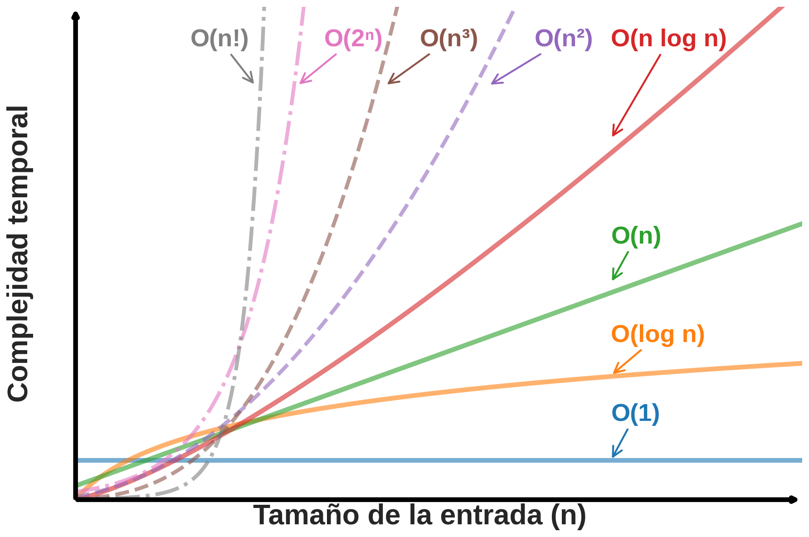

Compresión y despliegue de modelos de IA
Una visión estructural (Jensen Huang)
El insumo fundacional de la IA
Donde la energía se transforma en capacidad de cálculo
Si bien en esta materia nos centraremos en la IA embebida (bajar modelos a dispositivos Edge), la eficiencia es un problema global.
Permite que modelos entren en microcontroladores, celulares o FPGAs con recursos estrictamente limitados de memoria y cómputo.
La compresión reduce el costo y consumo energético en data centers, haciendo técnica y económicamente viable servir grandes modelos (ej. LLMs).
💡 Dominar la compresión de modelos es una habilidad valiosa en todo el espectro de hardware.
Análisis de los recursos necesarios para ejecutar un algoritmo:
Se expresan con la notación Big O, que describe el crecimiento asintótico.

Constante. No depende del tamaño de la entrada.
Lineal. Si la entrada se duplica, el tiempo se duplica.
Cuadrática. Si la entrada se duplica, el tiempo se cuadruplica.
Simplificaciones habituales en Big O:
Supongamos una capa densa (Fully Connected) con:
y = φ(W · x + b)
¿Cuántos parámetros y cuántas operaciones (MACs) tiene esta capa?
(N × M) pesos + M sesgos
N × M Supongamos una capa convolucional con:
Hin × WinCinHK × WKCout¿Cuántos parámetros y MACs tiene esta capa?
(HK × WK × Cin) × Cout + Cout
(HK × WK × Cin) × Hout × Wout × Cout
Hout = Hin - HK + 1 y
Wout = Win - WK + 1 por ser valid con stride
1)
El concepto de algoritmia clásica sigue siendo vital en redes neuronales (por ejemplo para analizar la escalabilidad de un modelo), pero en IA embebida también importa diferenciar el tipo de operación:
⚡ Por eso reducir bits y elegir formato tiene impacto directo en HW, energía y velocidad.
Algoritmos más eficientes (ej. SGD en vez de optimización exacta), reducción de dimensionalidad.
GPUs, TPUs, FPGAs: aceleran cada operación pero no reducen el número total de operaciones.
Reducir parámetros y operaciones del modelo, así como también el "costo" en hardware. Es el foco de esta materia.
Reducir tamaño y complejidad sin comprometer significativamente el rendimiento. Criticidad en la inferencia: el entrenamiento ocurre una vez, la inferencia se ejecuta continuamente en producción.
Eliminar conexiones, neuronas o filtros no esenciales. Puede ser estructurado (filtros/capas) o no estructurado (pesos individuales).
Reducir la precisión de pesos y activaciones (FP32 → INT8, INT4). Reduce memoria, mejora velocidad y eficiencia energética.
Descomponer matrices grandes en productos de matrices más pequeñas (SVD, Tucker, CP).
Entrenar una red pequeña (estudiante) para imitar una grande (maestro). Transfiere conocimiento implícito.
Búsqueda automatizada de la arquitectura óptima que minimice recursos manteniendo rendimiento.
Técnicas genéricas de compresión de datos aplicadas a los parámetros del modelo (Huffman, etc.).
Después del diseño y entrenamiento del modelo, aparecen etapas críticas para adaptar la red a hardware con recursos limitados.
El proceso se vuelve iterativo desde la Evaluación hacia la Selección de modelo.
Se añaden etapas de Compresión y Evaluación post-compresión antes del despliegue.
El ciclo completo: iteración de arquitectura y optimización del modelo pre-despliegue.
Análisis del modelo (MACs, parámetros, memoria) contra las restricciones del hardware objetivo.
Búsqueda de arquitectura neuronal: encontrar la mejor configuración (capas, neuronas, conexiones) que minimice recursos.
Poda, cuantización, factorización, destilación: reducir tamaño y complejidad sin perder rendimiento.
Verificar que el modelo comprimido cumple con las métricas de rendimiento y restricciones del hardware.
Implementación en el dispositivo: MCU, FPGA, ASIC, teléfono móvil, etc.
💡 Estos pasos pueden iterarse: si la evaluación falla, se vuelve a comprimir o a buscar otra arquitectura.
A continuación: técnicas de compresión en detalle →